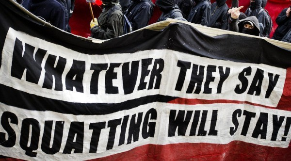

Сквотинг як соціо-культурний феномен
Загальна характеристика
Сквотери – це люди, які займаються незаконним захопленням приміщень і просторів. Однак існують певні труднощі щодо того, кого вважати сквотерами. Ця межа пролягає між реальним фактом захоплення та самоусвідомленням себе як сквотера. Отже, у вузькому контексті сквотер – це людина, яка нелегально захопила і використовує порожню територію, та з соціальних або політичних причин відстоює своє право на цей акт.
Найбільш відомими сквотами є сквоти Берліну, зокрема Кьопі та Тахелес (від нім. «говорити відверто»), які стали арт-майданчиками для незалежного мистецтва майже на тридцять років. У Тахелесі, до моменту його закриття у 2012 році, проводилися кінопокази, перформанси, художні виставки та семінари, а також працювало кафе. Kьопі продовжує свою діяльність, але більшою мірою спеціалізується на концертах.
З кожним роком зростає кількість людей, які живуть або прагнуть жити у містах. Підвищення рівня урбанізації актуалізує проблеми міського планування, розвитку інфраструктури, раціонального використання наявного простору і можливостей, які тісно пов’язані з проблемами росту безробіття, кількістю безпритульних, екологічними проблемами тощо. За таких умов сквотинг виступає не лише як спосіб самостійного вирішення житлових проблем, а й як фактор міського розвитку. Сквоти часто перетворюються в арт- або бізнес-майданчики, творчі простори – це сприяє розвитку інфраструктури, туризму, креативної економіки, вага яких з кожним роком зростає, надає необхідну зайнятість людям у місті, при тому, що держава не несе майже ніяких витрат на це.
Міське життя та ідентичність формуються завдяки взаємодії різних соціальних груп, їх взаєморозумінню, які досягаються завдяки наявності та використанню публічних просторів, які наразі зазнають значної приватизації та комерціалізації. Місцеві громади нерідко виступають проти перебудови вагомої у їх сприйнятті частини міста, в тому числі через захоплення цієї території, однак рідко досягають успіху. Сквотинг – один з тих рухів, які намагають протидіяти подібним тенденціям, створюючи свої публічні простори, відкриті для різних представників суспільства. Більшість названих проблем активно вивчається у західній історіографії, тоді як практично не досліджується у вітчизняній.
Більше про історію сквотингу можна дізнатися тут, а ознайомитися з останніми новинами з їхнього життя на цьому порталі.Фото-архів зібраний окремо.